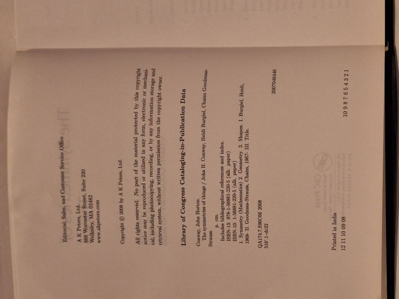

The Symmetries of Things
John H. Conway, Heidi Burgiel, Chaim Goodman-Strauss · A K Peters / CRC Press, Wellesley, Massachusetts, 2008

C$65 · Very Good condition
'The Symmetries of Things' by John H. Conway, Heidi Burgiel and Chaim Goodman-Strauss. A K Peters (an A K Peters Book / Taylor & Francis), 2008. A richly illustrated, three-level treatment of symmetry and the classification of patterns, from intuitive ideas to advanced group theory. Pictorial laminated hardcover boards. Clean, bright and square; text block unmarked. A Very Good copy of a sought-after, out-of-print title.
Details
- Publisher: A K Peters / CRC Press, Wellesley, Massachusetts, 2008
- Binding: Hardcover
- Edition: First edition (2008)
- Condition: Very Good
- ISBN: 9781568812205
- Category: Mathematics